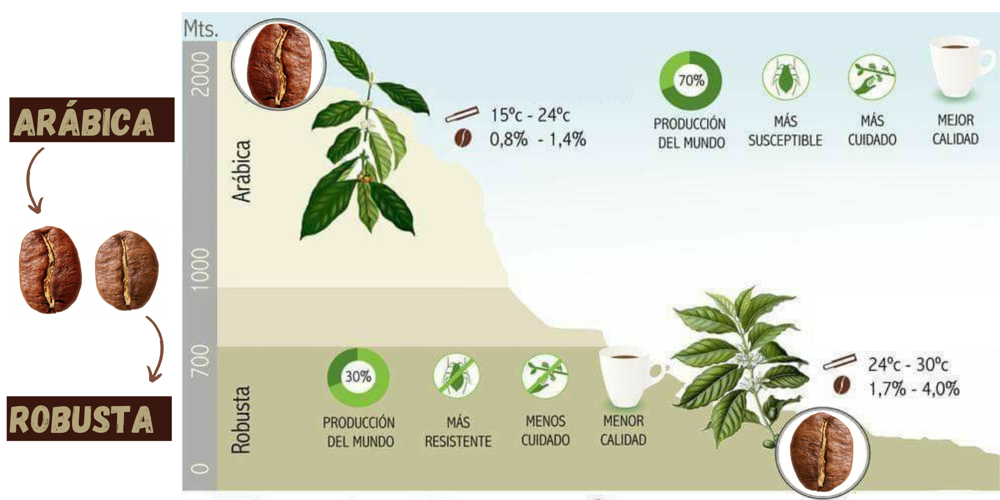

.png)
HISTORIA DEL CAFÉ
El café goza de una enorme popularidad y es uno de los cultivos con más historia en el mundo. Los árabes fueron los primeros en descubrir las virtudes y las posibilidades nutritivas de esta bebida alrededor del siglo XV, por eso se creyó durante mucho tiempo que la planta era de origen árabe. Sin embargo, investigaciones posteriores comprobaron que el cafeto es originario de Abisinia (Etiopía). También existió una amplia confusión en cuanto a los orígenes de su nombre, el cual fue objeto de diversas modificaciones a través de la historia. Llegado a América en 1723 en manos de un teniente de navío francés, el café desembarcó en las Antillas luego de una extensa travesía y antes del final del siglo XVIII fue distribuido en todo el continente.
VARIEDADES DE CAFÉ: Segun las especies
Existen más de 60 especies de cafetos en el mundo, pero las utilizadas con fines comerciales son la Arábiga y la Robusta.
Arábica
Originaria de Etiopía, requiere un clima templado y crece idealmente en regiones montañosas, tropicales y húmedas. Se la reconoce mundialmente por su calidad superior y es la especie que más se cultiva en el mundo. Los granos de café arábico dan por resultado una bebida de aroma excelente y sabor delicioso, por ello su costo es mayor en el mercado.
Robusta
Originaria del Congo, crece en zonas ecuatoriales y en terrenos llanos o de poca altura. Esta planta demora hasta un año en madurar y el contenido de cafeína es superior a la especie arábiga. Se le atribuye el nombre “robusta” por ser una plantación resistente a las enfermedades y generalmente se emplea para producir cafés comerciales, es decir, café instantáneo o café molido de mezclas.
VARIEDADES DE CAFÉ: Segun el ORIGEN
El café proviene de distintas zonas productoras de climas cálidos y húmedos, todas ellas ubicadas entre los trópicos de Cáncer y Capricornio.
AMÉRICA CENTRAL Y EL CARIBE: Predomina la variedad arábiga que se cultiva en México, Panamá, Costa Rica, Guatemala e islas del Caribe.
AMÉRICA DEL SUR: Brasil lidera el mercado mundial del producto seguido por Colombia, Ecuador y Perú, países donde también predomina la variedad arábiga.
ÁFRICA: La mayor parte de los países del continente africano, cálido por excelencia, son productores de la variedad robusta con la salvedad de Kenia, Tanzania y Camerún, que por su ubicación posibilitan el cultivo de la especie arábiga